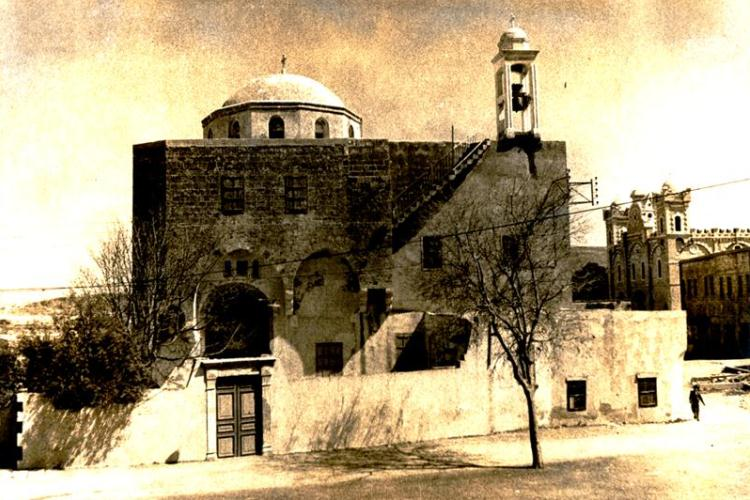

كنيسة مار جاورجيوس
قريبة جداً من كنيسة مار إسطفان، أصغر من هذه الأخيرة، لكنها بالرغم من ذلك تدل على دقة في البناء خصوصاً قبتها الكروية الشامخة عالياً في وسطها عبر السنين
كنيسة مار جاورجيوس
بنيت هذه الكنيسة عام 1897، جدرانها من الحجر الرملي الأسمر. يتم الولوج إليها بواسطة باب رئيسي في حائطها الجنوبي وآخر في حائطها الغربي تتألف هذه الكنيسة من سوق واحدة
كنيسة مار جاورجيوس
يفصل صحن الكنيسة عن قدس الأقداس أيقونسطاس بيزنطي من الرخام الأبيض يتخلله ثلاثة أبواب
كنيسة مار جاورجيوس
نصل من الباب الوسطي إلى المذبح وفي أحد جدرانها حفر جرن معمودية
كنيسة سيدة البحر
تقع في الناحية الغربية من المدينة في حي السيدة(نسبة لكنيسة السيدة) تطل على السور الفينيقي مباشرة تماماً أمام الفتحة التي تفصل السور إلى قسمين
كنيسة سيدة البحر
يقال أنها بنيت على اساسات معبد وثني. نصل إليها بواسطة درج منحدر بُني حديثاً. تحيط بالكنيسة ساحة. يتم الدخول إلى الكنيسة عبر بابها الشمالي وهو عبارة عن سقيفة تقوم على أعمدة مستديرة الشكل تمتد إلى نهاية حائطها الغربي المطل على البحر
كنيسة سيدة البحر
حجارتها رملية سمراء متوسطة الحجم في الأسفل تصغر كلما ارتفعت . تتألف الكنيسة من رواق واحد منفصل عن قدس الأقداس بواسطة أيقونسطاس بيزنطي ذات بابين باب وسطي وآخر شمالي
كنيسة سيدة البحر
ينتهي الهيكل بحنية Abside ويرتفع سقف الكنيسة بشكل عقد سريري مكسور. وكما كنيسة مار جاورجيوس نرى في حائطها الجنوبي عند مدخل الباب جرن المعمودية محفور في حجر رملي
كنيسة سيدة البحر
تنير الكنيسة عدة شبابيك وفتحات صغيرة
«»